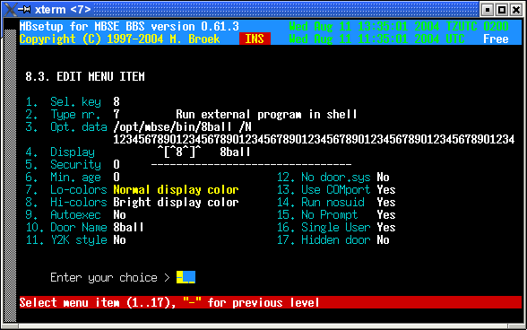
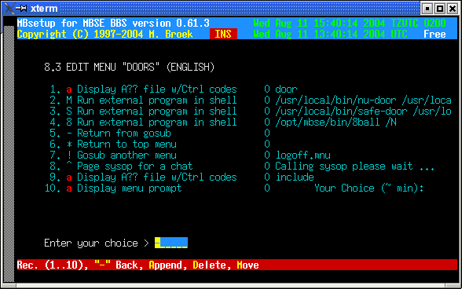

Last update 11-Aug-2004
MBSE BBS - Running DOS doors.
Introduction
Running DOS doors is possible on systems that can run dosemu. The latest versions of dosemu don't need to be started suid root or started using sudo, it can run as the user that is logged in the bbs. Since that is possible, a new location for the virtual C: drive is now being used withing the $MBSE_ROOT file structure. This virtual C: drive is owned by the group bbs. The basic ideas how doors should be run written by Redy Rodriguez are still valid, but some scripts are changed and some dosemu files must be copied into the mbse directory tree.
Installing dosemu
Some distributions have good dosemu packages, others don't. You need a dosemu
that can be used in a systemwide multiuser setup. The bad packages want to have
the dos drive in each users home directory, this is not what we want for doors.
If you don't have a good dosemu you have to compile your own. This is not too
complicated. First download the source from dosemu. You don't need the freedos-bin source
if you are going to use ms-dos or pc-dos.
Unpack the source in some directory of your choice and compile the sources:
mbse@seaport$ tar xfvz dosemu-1.2.2.tgz mbse@seaport$ cd dosemu-1.2.2 mbse@seaport:~/dosemu-1.2.2$ ./configure --prefix=/usr --sysconfdir=/etc/dosemu --with-x mbse@seaport:~/dosemu-1.2.2$ makeNote that the
--with-x is not needed for running doors, but it
might be handy that you can use dosemu as user mbse in X to do maintenance on
your doors.Then as root do:
root@seaport:~/dosemu-1.2.2# make install
Setup dosemu in mbse
First copy /etc/dosemu/dosemu.conf into ~/etc/dosmeu.
Then edit ~/etc/dosemu/dosemu.conf so that we have a version for
mbse users. Set the following settings in that file:
$_hdimage = "/opt/mbse/var/dosemu/c" $_floppy_a = "" $_xms = (1024) $_ems = (2048) $_dpmi = (0x1000) $_layout = "us"Next we need to setup the C: drive. Do this as user mbse. First type
umask
007, this sets the create mode for directories to 0770 and files to 0660
so that we create all files and directories read/write for all bbs users. This
is very important! Type the following commands:
mbse@seaport:~$ umask 007 mbse@seaport:~$ cd var/dosemu/c mbse@seaport:~/var/dosemu/c$ mkdir dos dosemu temp util doorsNow we must install dos. If you use ms-dos then in
~/var/dosemu/c
copy the ms-dos files command.com, io.sys and
msdos.sys. In ~/var/dosemu/c/dos copy all ms-dos
commands. Next install the dosemu utilities, copy these from
/usr/share/dosemu/freedos/dosemu to
~/var/dosemu/c/dosemu. Now there is a empty
~/var/dosemu/c/util, copy some utilities here such as your
favourite dos editor, zip and unzip etc.Next we must create
config.sys and autoexec.bat. These
files must be dos crlf formatted. You can do that with the joe editor, for
example joe -crlf config.sys. Examples:config.sys: BUFFERS = 20 DEVICE=C:\DOS\SETVER.EXE SET TEMP=C:\TEMP DOS=HIGH,UMB FILES=50 autoexec.bat: @ECHO OFF PROMPT $P$G PATH C:\DOSEMU;C:\DOS;C:\UTIL; SET TEMP=C:\TEMP Lh C:\DOS\DOSKEY /INSERT Lh C:\DOS\SHARENow we are ready to try it, type
mbsedos and the dos emulator
should start. You can leave dosemu with the command exitemu.
Installing a door
All doors are started using the script ~/bin/rundoor.sh. This script
is never started directly, you should make a copy of that with the name of the
door, but the best solution is to make a symlink with the name of the door. For
example:
mbse@seaport$ cd ~/bin mbse@seaport:~bin$ ln -s rundoor.sh 8ballSee also inside
rundoor.sh for the instructions. This file does
several things, first it prepares the users home directory with the dosemu
environment so that dosemu will run for the user. Then it creates a node
directory in the dos C: drive and copies the door dropfiles into that node
directory. Finally it starts dosemu in virtual comport mode and inserts the
commands in dos to start the door.But before we can run the door, the door itself must be installed in the dos partition. In this example I will explain how to install the door 8ball. Start
mbsedos and create a directory c:\doors\8ball.
Unpack 8ball in that directory and run setup. Test the door with
the command local. Now goto the directory c:\doors and
create the file 8ball.bat. That file will be used to start the
door. It will be called by c:\doors.bat with two parameters, the
name of the door and the nodenumber.
@ECHO OFF C: C:\UTIL\X00 E B,0,57600 CD \DOORS\8BALL ASKME.EXE /E /C1 /PC:\DOORS\NODE%1 C:\UTIL\X00 CD \DOORS\NODE%1 DEL DOOR.SYS DEL DOOR32.SYSFinally we have to make a menu entry to start the door. The Opt. Data line is the command to start the door, the optional
/N is replaced by the
current nodenumber of the user. A second option may be used,
novirtual, if that is present the rundoor.sh will
start dosemu without setting the comport in virtual mode. Use this if your door
isn't a real door but a normal dos program.

Note that I use the Display lines to make the menu, there are only ansi screens for the top and common lines on the screen, see the second image how to build the whole doors menu.

That's it.
What if I don't upgrade
That's your choice, but for a while the old method starting dosemu via sudo is
still supported. The file ~/bin/bbsdoor.sh is still there, but the
file ~/bin/rundoor.sh is renamed to
~/bin/runvirtual.sh. So you should change all symlinks of your door
names in ~/bin (or copies) to ~/bin/runvirtual.sh. You
should not need to change anything else.